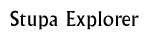

Enquiry Grid 5  |
|
Chapter/s and section/s used: Buddha Explore, Buddha Story
Individual project: Introduce the activity by discussing stupas, including layout, placement of different architectural elements, use and decoration. Ask pupils to collect information from the Buddha Explore about the Amaravati Stupa using the enquiry grid. Then have them use the information they collected to write a guidebook entry about visiting this stupa. If pupils want background information about the life of the Buddha, they can read the Buddha story. Remind them that they are trying to encourage people to visit the stupa. Therefore, they should be sure to explain the different parts of the stupa, and describe the atmosphere, layout and decoration whenever possible.
Class project: Introduce the activity by discussing stupas, including layout, placement of different architectural elements, use and decoration. Split the class into groups and assign each group one part of the stupa to learn about. Then ask them to visit the Amaravati Stupa in the Buddha Explore section. Have them write a paragraph about their area for a class guidebook. If pupils want background information about the life of the Buddha, they can read the Buddha story. Bring the class together and discuss the unifying elements necessary for a guidebook. Order the book, put the paragraphs and illustrations together with the unifying elements (such as a table of contents or index) and bind the book.
Extensions: Ask pupils to choose another stupa in India and write a guidebook entry describing it. Include the name, location, and age of the stupa, as well as any special historical or architectural features of the stupa. Encourage pupils to include atmospheric descriptions of the spaces whenever possible.
Or, ask pupils to compare a stupa to a monument built by another culture from around the world. Include ways in which they are similar and/or different in terms of shape, layout, decoration, function, purpose and access. Create a poster comparing the two structures, with labels explaining the different parts of each structure. Teacher notes: A stupa is a dome-shaped structure connected with worship of the Buddha and Buddhist dignitaries. The shape of a stupa is based upon pre-Buddhist burial mounds.
When the Buddha died in the fifth century B.C. he was cremated and his remains were divided into eight parts. The remains were placed in small caskets. Stupa mounds were then built in different regions of India to house the caskets. The casket was placed in a small hollow space at the base of the otherwise solid dome of the stupa. Around the stupa dome was a pathway so that pilgrims and worshippers could worship by walking around the dome.The Amaravati stupa was built between second century B.C. and third century A.D. Scholars believe that there were many phases of building and rebuilding at the site, judging from stylistic differences among the different sculptures found there. It was built out of limestone with an impressive dome which probably originally stood about 18 metres high. An elaborate railing also surrounded the dome structure.Buddhist pilgrims would have come from all parts of India to Amaravati to worship there. Amaravati was an important city during the Satavahana dynasty and these kings were probably responsible for much of the building at Amaravati. However, there is evidence that the major building at Amaravati was actually paid for by local dignitaries and merchants.Background information: The BuddhaTeachings of the Buddha Ashoka and the Mauryan Empire The growth and spread of Buddhism Buddhist pilgrimage Chinese scholars
© The British Museum |